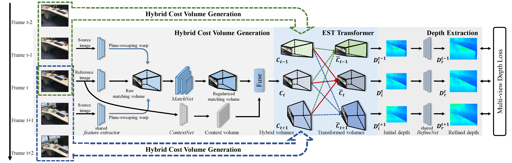

Multi-view Depth Estimation using Epipolar Spatio-Temporal Network
Xiaoxiao Long1 Lingjie Liu2 Wei li3 Christian Theobalt2 Wenping Wang1
1The University of Hong Kong 2Max Planck Institute for Informatics 3Inceptio
arXiv 2020
Abstract
We present a novel method for multi-view depth estimation from a single video, which is a critical task in various applications, such as perception, reconstruction and robot navigation. Although previous learning-based methods have demonstrated compelling results, most works estimate depth maps of individual video frames independently, without taking into consideration the strong geometric and temporal coherence among the frames. Moreover, current state-of-the-art (SOTA) models mostly adopt a fully 3D convolution network for cost regularization and therefore require high computational cost, thus limiting their deployment in real-world applications. Our method achieves temporally coherent depth estimation results by using a novel Epipolar Spatio-Temporal (EST) transformer to explicitly associate geometric and temporal correlation with multiple estimated depth maps. Furthermore, to reduce the computational cost, inspired by recent Mixture-of-Experts models, we design a compact hybrid network consisting of a 2D context-aware network and a 3D matching network which learn 2D context information and 3D disparity cues separately. Extensive experiments demonstrate that our method achieves higher accuracy in depth estimation and significant speedup than the SOTA methods.
|
|
|
| Paper | Code |
Overview
Overview of our method. In the training stage, our method takes a clip of video with five frames as input to estimate the depth maps of the middle three target frames. For each target image with its source images, we first extract learned feature maps by a shallow feature extractor. Subsequent plane-sweeping warping is applied to the feature maps to construct raw matching volume, and it is further regularized by MatchNet to obtain a regularized matching volume. In parallel, we utilize ContextNet to learn 2D context information from the target image, and concatenate context volume and matching volume together to get one hybrid volume. The Epipolar Spatio-Temporal (EST) transformer is applied on all obtained hybrid volumes to associate temporal coherence with them. Finally, we extract initial depth maps from the transformed volumes and further refine the initial depth maps by RefineNet.
Video

{kind=link}